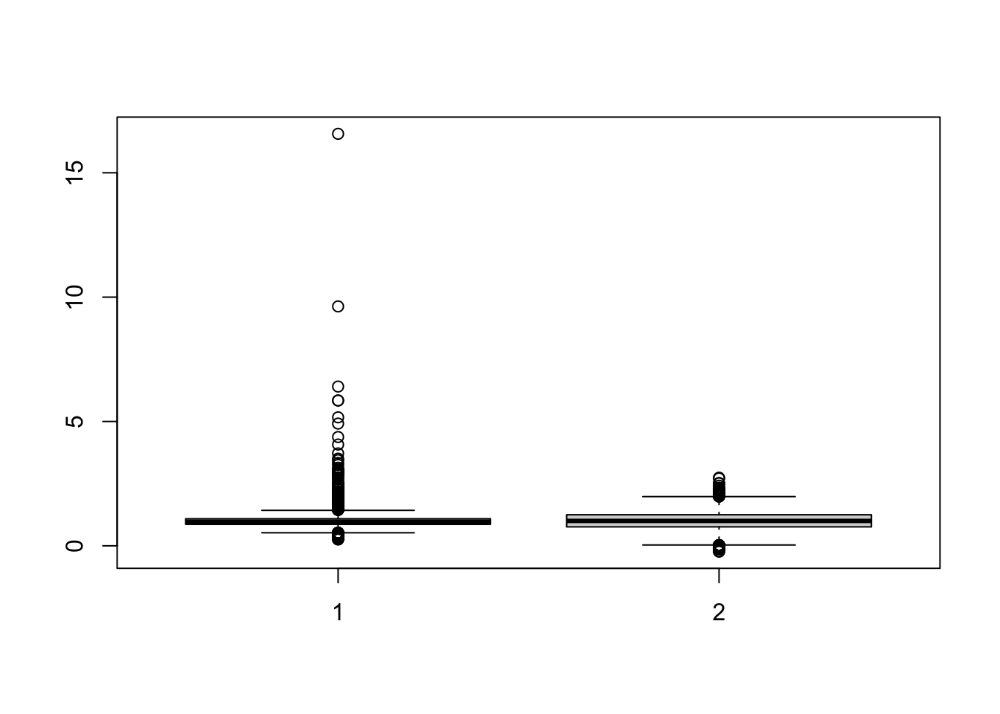

Data = readr::read_csv("Public.csv") # データ読み込み
Data = dplyr::mutate(
Data,
D = dplyr::if_else(
LargeDistrict == "中心6区",1,0
) # 2022年に取引されれば1、2021年に取引されていれば0
)5 明示的なBalancing Weightの算出
Hainmueller (2012) や Zubizarreta (2015) では、Balancing Weightを明示的な”最小化問題”の解として算出します。 このようなアプローチは、満たすべき条件(負の荷重が生じない/サンプル平均にバランスするなど）を課した上で、Balancing Weightが算出できます。 このためOLSによる暗黙のBalancing weightに比べて、より透明性の高い分析が可能です。
5.1 算出方法
Balancing Weightについて、以下のような制約を貸します。
全ての\(X_l\)について、その加重平均をデータ全体の平均値に一致させる: \[D=1における(\omega(x,1)\times X_l)の平均値\] \[= D=0における(\omega(x,1)\times X_l)の平均値\] \[= X_lのデータ全体での平均値\]
全てのWeightは非負の値をとる: \[\omega(x,d)\ge 0\]
上記の制約を満たす\(\omega(d,x)\) のなかで、最もばらつきが小さいものをBalancing Weightとします。 ばらつきの測定方法は、いくつかの提案があります。
Hainmueller (2012) : \(\omega(x,d)\) のentropy divergence \(\omega(x,d)\log(\omega(x,d)/q)\)
- \(q\) はbase weightであり、例えば \(q=1/事例数\) が用いられる
Zubizarreta (2015) : \(\omega(x,d)\) の分散
特にentropy divergenceを用いる Hainmueller (2012) の方法は、実際の計算も早く実用的です。 以下では、実際の実装方法を紹介します。
5.2 Rによる実践例
\(D\)と\(X\)の交差項を含めたモデルのOLS推定、およびその性質の診断は、以下のパッケージを用いて実装できます。
readr (tidyverseに同梱): データの読み込み
WeightIt: entroy weightの計算
marginaleffects: WeightItパッケージが計算するWeightを用いた推定
5.2.1 準備
データを取得します。 \(D\) として、立地が中心6区か否かで、1/0となる変数を定義します。
ベンチマークとして、一切のバランスを行わない単純差、およびOLSによるバランスを行った結果を示します。
Estimate Std. Error t value Pr(>|t|) CI Lower CI Upper DF
(Intercept) 38.03972 0.3182179 119.5399 0.000000e+00 37.41591 38.66354 6376
D 20.94057 1.2529064 16.7136 2.084367e-61 18.48446 23.39669 6376 Estimate Std. Error t value Pr(>|t|)
(Intercept) 5.571162752 2.189748777 2.544202 1.097620e-02
D 19.124222089 0.663203786 28.836117 5.762617e-172
Size 0.940157758 0.097538720 9.638816 7.723573e-22
Tenure -0.788224376 0.082744151 -9.526043 2.266689e-21
StationDistance 1.067338032 0.151314422 7.053776 1.925476e-12
I(Size^2) 0.007310055 0.001165973 6.269489 3.859676e-10
I(Tenure^2) 0.013459763 0.001480646 9.090464 1.294755e-19
I(StationDistance^2) -0.010734191 0.009143823 -1.173928 2.404677e-01
Size:Tenure -0.015367241 0.001549637 -9.916673 5.169686e-23
Size:StationDistance -0.048089449 0.003899316 -12.332792 1.492403e-34
Tenure:StationDistance 0.028634877 0.004083929 7.011599 2.599274e-12
CI Lower CI Upper DF
(Intercept) 1.278517986 9.863807518 6367
D 17.824119406 20.424324772 6367
Size 0.748949031 1.131366486 6367
Tenure -0.950430768 -0.626017985 6367
StationDistance 0.770710827 1.363965238 6367
I(Size^2) 0.005024355 0.009595755 6367
I(Tenure^2) 0.010557197 0.016362328 6367
I(StationDistance^2) -0.028659162 0.007190780 6367
Size:Tenure -0.018405051 -0.012329431 6367
Size:StationDistance -0.055733421 -0.040445478 6367
Tenure:StationDistance 0.020629000 0.036640753 6367バランス前では中心6区の物件の方が、20.9 [18.5,23.4] 販売価格が平均的に高い傾向があります。 この傾向は、部屋の広さや築年数、駅からの距離の平均値/分散/共分散をバランスさせても、大きくは変わりませんでした。
5.2.2 Entropy Weightによるバランス
\(D\) 間でSize,Tenure,StationDistanceの平均値をバランスさせ、Priceの平均値を比較します。 まずWeightItパッケージを用いて、Entropy Weightを計算します。 また比較のためにlmwパッケージを用いて、OLS Weightも計算します。
Entropy = WeightIt::weightit(
D ~ (Size + Tenure + StationDistance)**2 +
I(Size^2) + I(Tenure^2) + I(StationDistance^2), # 平均、分散、共分散をバランス
data = Data,
method = "ebal", # Entropy Weightを計算
estimand = "ATE")
OLS = lmw::lmw(
~ D + I(Size^2) + I(Tenure^2) + I(StationDistance^2) +
(Size + Tenure + StationDistance)**2,
Data
)
boxplot(Entropy$weights,OLS$weights)
OLSを用いると負のBalancing weightが発生していることが確認できます。 対してEntropy weightでは、そのようなweightは生じません。
OLS$weights |> summary() Min. 1st Qu. Median Mean 3rd Qu. Max.
-0.2343 0.7615 1.0007 1.0000 1.2484 2.7393 Entropy$weights |> summary() Min. 1st Qu. Median Mean 3rd Qu. Max.
0.2533 0.8622 0.9706 1.0000 1.0877 16.5677 Entropy Weightを用いたバランス後の平均差は、marginaleffectsパッケージのavg_comparison関数を用いて、以下のように計算できます。
WeightIt::lm_weightit(
Price ~ D*(I(Size^2) + I(Tenure^2) + I(StationDistance^2) +
(Size + Tenure + StationDistance)**2),
data = Data,
weightit = Entropy
) |>
marginaleffects::avg_comparisons(variables = "D")
Estimate Std. Error z Pr(>|z|) S 2.5 % 97.5 %
19.9 0.625 31.8 <0.001 736.2 18.7 21.1
Term: D
Type: probs
Comparison: 1 - 0
Columns: term, contrast, estimate, std.error, statistic, p.value, s.value, conf.low, conf.high, predicted_lo, predicted_hi, predicted 引き続き20前後の平均価格差が算出されました。